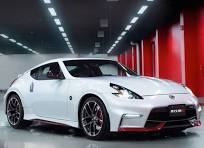

Contenido

El Nissan GT-R R35 Nismo es una versión de alto rendimiento del legendario "Godzilla", optimizada por la división Nismo para circuito. Cuenta con un motor V6 biturbo de 3.8L (VR38DETT) que produce 600 hp, logrando una aceleración de 0 a 100 km/h en 2.5-2.7 segundos y una velocidad máxima de 320-330 km/h.
El Nissan 370Z es un automóvil deportivo icónico, reconocido por su motor 3.7L V6 de 332 caballos de fuerza (VQ37VHR) y tracción trasera, enfocado en el manejo puro y agilidad. Fabricado hasta 2020 (con unidades modelo 2021/2022 disponibles), combina una suspensión rígida con opciones de caja manual de 6 velocidades o automática de 7. Es famoso por su alto desempeño y valor deportivo.
